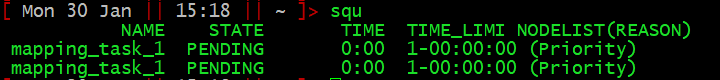
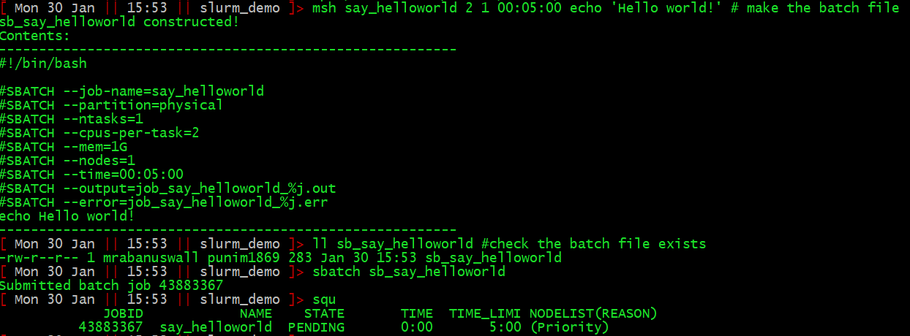
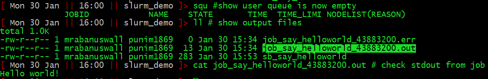
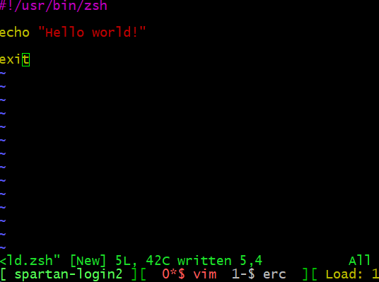
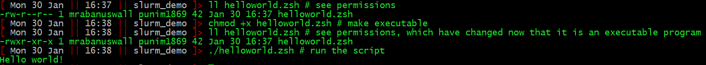
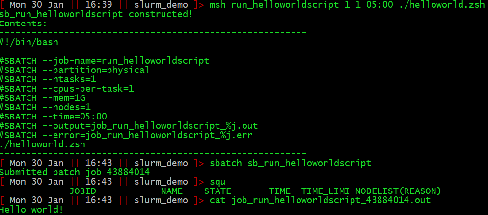

The HPC cluster is a shared resource. The memory and CPUs it has need to be shared. To make this happen, a program called slurm runs on the cluster and acts as the central resource access coordinator. To run some job on the cluster, you submit a request to slurm, that contains the command(s) you want to run, along with a request for a certain amount of resources.
Make sure you have the most recent version of the .zsh profile file. Note: This will overwrite your existing zsh profile file, so if you’ve made changes, be sure to save and integrate them properly.
cd /home/$USER
[[ -e .zshrc ]] && mv .zshrc .zshrc_old
cp /data/gpfs/projects/punim1869/.admin/assets/.zshrc .
source ./.zshrcThis request is in the form of a text file called a slurm batch
file. Let’s say I wanted to map reads.fastq to
genome.fasta using the aligner minimap2. A
command to do this might be:
minimap -a -x sr reads.fastq genome.fasta > reads_to_genome.samTo do this quickly, it would be useful to have quite a lot of capacity for parallel computing (say, 25 CPU cores), and and also a lot of memory (say, 10Gb RAM). A slurm batch file to request this task would contain this text:
#!/bin/bash
#SBATCH --job-name=mapping_task_1
#SBATCH --partition=physical
#SBATCH --ntasks=1
#SBATCH --cpus-per-task=25
#SBATCH --mem=10G
#SBATCH --nodes=1
#SBATCH --time=1-0
#SBATCH --output=job_mapping_task_1_%j.out
#SBATCH --error=job_mapping_task_1_%j.err
minimap -a -x sr reads.fastq genome.fasta > reads_to_genome.samAs you can see, it’s just a bash script (more on them later if you
don’t understand yet). It begins with the interpreter directive
(#!/bin/bash) marking it as a bash script, and ends with
the command(s) we want to run. In between, the instructions to slurm are
marked with the prefix #SBATCH, followed by
--<argument-name>=<argument>.
The most important are:
<days>-<hours> and
<hours>:<minutes>:<seconds>.After the time has elapsed, the job can be stopped and
the resources freed for other users, so be sure to request more than you
need. It is possible to request extended time for a running job in cases
where your estimate was too little.
Typically your scripts will produce some file and that’s all you want. Job done, hit the showers.
However, Linux programs will often output things to either
stdout or stderr. Once your job is complete, any
output to these will be given in two files
job_<job-name>.out and
job_<job-name>.err.
msh()
function and shell scripts.You could use a text editor (like vim) to type out
everything every time you want to make a slurm batch file and run a job.
But that is a bit time consuming. I have provided a simple shell
function msh ([m]ake [s]lurm [h]eader). You use it with the
following syntax:
msh <job_name> <CPUs> <RAM_in_Gb> <time_formatted_for_slurm> <the commands you want to run>It will create a slurm batch file named
sb_<job_name> automatically.
See the example below in the section A simple workflow example.
Let’s say the above slurm batch file was saved as sb_mapping_task_1.
To submit it, simply use the command
sbatch <filename> (so,
sbatch sb_mapping_task_1).
Slurm will put your request in a queue and allocate resources based on how large your request was, when it was submitted, etc. It tries to be intuitively fair according to parameters controlled by the admins, making them the cosmic arbiters of morality in HPC computing.
See the example below in the section A simple workflow example.
The command squeue will display a list of all running or
pending jobs.
squeue -u <your_username> will show only your
jobs.
I have provided a shortcut squ ([s]lurm [q]ueue [u]ser)
which quickly prints the information for the user’s requests, formatted
nicely:

Here, you can see which jobs are in the queue (NAME), whether they are pending or running (STATE), how long they have been running for (TIME), and how long they have been given (TIME_LIMIT).
Time for an example.
So, here is the process for writing, submitting, and monitoring, a job called “say_helloworld” that simply prints “Hello world!” to stdout:

Once the job has run, the output to stdout will be in job_say_helloworld.out.

If you want to delete requests, scancel <job-id>
can be used. I have provided a shell alias to cancel all your jobs:
sqk ([s]lurm [q]ueue [k]ill). To see what it actually does,
explore your ~/.zshrc, or type alias sqk.
You will quickly realise it is hard to use msh when your
command is complex, especially if it contains lots of quotes or
redirections or pipes, or multiple lines.
Moreover, you will find developing pipelines really hard if EVERY time you run it you need to make and submit a batch file. Part of this problem is overcome by running interactive sessions. The other part is packaging your commands into shell scripts.
A script is just a list of commands for the shell to run. You can
make them with any text editor. Notepad is ok. Vim (which can be used
from the command line, just type vim) is excellent, but
harder to learn. Komodo Edit is an excellent compromise.
There are only two things you need to know to put your commands into a script.
#! followed by a path to the appropriate interpreter. You
will frequently see for example #!/bin/bash,
#!/usr/bin/zsh, #!/usr/bin/awk,
#!/bin/perl, etc.
chmod command. Simply type
chmod +x <file_name> to make your file into an
executable script.The following pipeline shows how I can examine, and then run, a simple hello world zsh script.
First, I write the script, here I have used vim, and saved it as
helloworld.zsh

Then we make it executable and run it:

That’s all you need to know to get started. To write advanced shell scripts requires learning more of the bash/zsh language. But you’re now in a position to use slurm to run shell scripts rather than sending your commands directly.

Frequently we want to request a lot of jobs, say, when we want to map
reads.fastq to ref_1.fasta, and
ref_2.fasta and ref_3.fasta and … etc. up to
ref_100.fasta.
To do it, use loops to create and submit jobs (or use GNU parallel if you want to be super hip). For now I will leave this as a challenge for you, but will expand this tutorial on request.